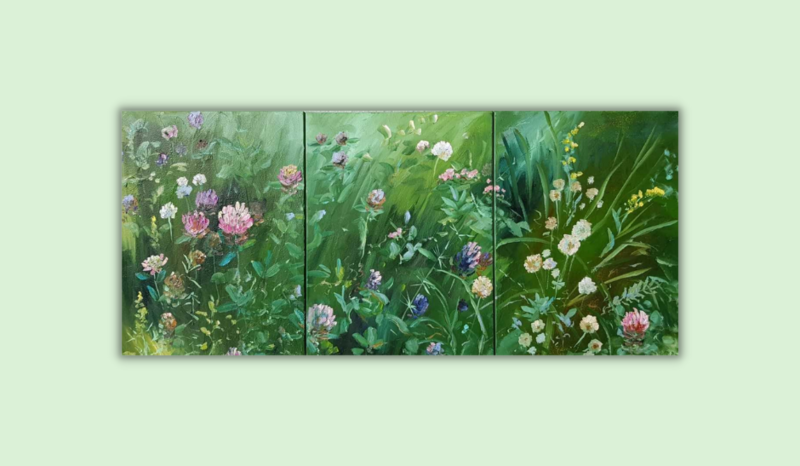

Bibliotekos naujienos
Visos naujienos
2022-11-18
VILNIUS TECH SKAITO laisvalaikis: Diana Gabaldon „Outlander“

2022-11-17
Pildyk „VILNIUS TECH skaito“ anketą ir nemokėk delspinigių

2022-11-17
Dianos Zviedrienės tapybos darbų paroda „Žolynų pasaka“

2022-11-15
Fizinių mokslų tematikos el. knygos platformoje ebooks.vilniustech.lt
Įvykiai
Visi įvykiai
- D. Zviedrienės tapybos paroda „Žolynų pasaka“
- 4 a. val. mokymai „Studijų metodai. Probleminis mokymasis“
- Atviros paskaitos moksleiviams
- Atviros paskaitos moksleiviams
- Verslo vadybos fakulteto doktorantų mokslinis